| About Us | Special Thanks | Site Map |
|||||||||
| About Us | Special Thanks | Site Map |
|||||||||
 |
| 朝６時。太陽が昇りはじめるころ。 目が覚めると、ひでくんはもう起きて、テラスで写真撮影を始めていました。 のんびり寝てたらもったいない～、と私もあわてて起き出します。 |
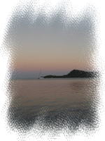 ボラボラの朝焼け |
|
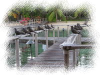 鳥さんのお出迎え |
朝ごはんの前に、ホテルの敷地内をふたりでお散歩することにしました。 ドアを開けると、鳥たちが桟橋の手すりに整列して留まっています。 |
| 東の空（水上バンガローの反対側）が、やしの木やバンガローの間から だんだん明るくなってきました。 |
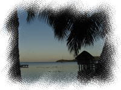 やしの木シルエット |
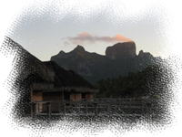 朝日に輝くオテマヌ |
朝焼けにうっすら染まったオテマヌ山がとてもきれいです。 う～ん、今日はいいお天気になりそう♪ |
| ビーチに出ると、マティラ岬の向こうから太陽が顔を出していました。まぶしいっ(＞_＜) ビーチの先端には屋根つきのテーブルがあります。 ここでお食事もできるのかな？ |
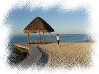 岬のテラス |
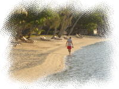 フランス人のおじいさん |
マティラ側のビーチも朝日がキラキラしてとてもいい感じ。 私たちのほかに、フランス人のおじいさんがビーチを散歩していました。 昨日夫婦でビーチに来てた方です。年を取ってからも夫婦でバカンスっていいなあ。 私たちもそんな夫婦になりたいものです。 |
| マティラ側のビーチから、今度はバンガローの間の小道を通ってレセプション棟のほうに戻り、レセプション棟の隣にあるアクティビティセンターをのぞいてみます。 ここでアクティビティの予約をするようですが、時間が早いのか係の人はいませんでした。 チェスなどの娯楽グッズや本（日本のもあり）・パソコンなどがありました。 |
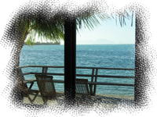 アクティビティセンターの中から |
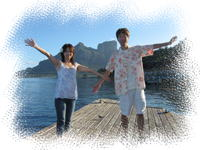 オテマヌと山ポーズ(？) |
そこから船着場へ。 雲がほとんどない青空で、昨日は雲に隠れていたオテマヌ山がよく見えます。 ここで、我が家の定番「山ポーズ」で撮影。 |
| 桟橋の下は、お魚さんがいっぱいです。 私たちの部屋からすぐだし、あとでシュノーケルしにこよう～。 |
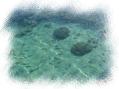 桟橋付近の魚 |
|
さて、部屋に戻って朝ごはんです。 ウェルカムフルーツと、昨日飲みきれなかったシャンパン空けちゃいましょう～。 朝からシャンパン。なあんて贅沢♪ セレブ気分です。叶姉妹のようです。 （勝手なイメージ・・） |
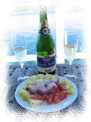 フルーツとシャンパン |
|
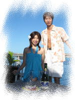 テラスで朝食 |
フルーツカットはひでくんにお願いして、 私はこの後のシュノーケル準備をさせてもらいました。 全身に日焼け止め塗るのも結構手間がかかるんだもの。。 服を着ようとして目に入ったのは、ホテルからのプレゼントのパレオ。 せっかくだからこれ、着てみちゃお～っと。(*^m^*)うふふ♪ ・・なんてやってる間にてきぱきと朝食の準備はできてゆき・・（役立たずな嫁・・）、 テラスで朝食タイムです。 |
|
シャンパングラスを傾けながら、優雅なひととき。 青い空、青い海。テラスに鳥のお客様。 この景色が一番のご馳走かな。 |
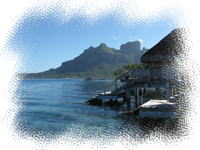 テラスからオテマヌを望む |
|
朝食の後、レストランでお魚用のパンをもらい、 ビーチでライフジャケットとフィンを借りて、シュノーケル開始です。 テラスから階段を下りると、そのまま海に出られるようになっています。 バンガローの前には大きな珊瑚礁があり、黄色や青のカラフルなお魚さんがいっぱい♪ パンを投げると、どんどん群がってきます。 うわあ、昨日のビーチより多い！きれい～。 |
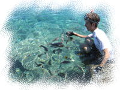 コテージ前に集まる魚とたわむれる |
|
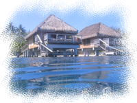 海から見たコテージ |
それぞれ防水カメラを片手に、コテージのまわりを泳ぎました。 お魚はうち（私たちの部屋）の前が特に多いみたい。 ・・って、さっきパンをあげて集めたからかも・・(^-^; |
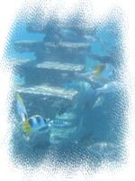 コテージ下の魚たち |
|
朝に行った船着場のほうにも泳いで行ってみました。 （船着場でシュノーケルするときは、クルーザーがこないときに、 まわりに気をつけながら泳ぎましょう。） |
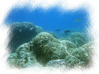 桟橋近くの珊瑚 |
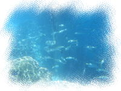 桟橋下の魚 |
こちらもたくさんのお魚が！ バンガローのテラス前より大きな魚が多いです。 大きめの魚が群れでそばにくると、ちょっと怖かったけど。。 そういえば、昨日マンタもここで泳いでいたんだなあ～。 |
|
午後からはフォトツアー（後述）なので、支度の時間を考慮し早めに昼食をとらねば。 ルームサービスを頼んで、テラスで食べることに。 （ふたりともテラスがお気に入り。） まだ１０時半前だったので、朝食メニューの「ワッフル」と「タヒチアンフライドライス」を 内線でオーダーしました。 |
|
ルームサービスが来るまで30分くらいはかかるだろう、と思って シュノーケルを再開して、船着場の方から戻る途中、 男性スタッフがうちの隣のバンガローから、何やら私たちを呼んでいるのに気づきました。 頼んだメニューが届いたようです。 （なぜ隣のバンガローに・・？私たちが船着場の方にいたからかな？） あわててテラスに戻り、受け取りのサインをします。 スタッフさん、お手数かけました。。ゴメンナサイー(≧≦) |
|
さて、テラスでごはん（その２）です。 ワッフルもフライドライスもやっぱりすごいボリュームです。 朝食メニューなのに。。お昼でも十分です。 味はどちらもおいしい～っ。 |
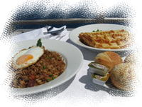 ワッフルとフライドライス |
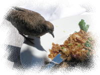 珍客 |
食べている途中、鳥がフライドライスを狙ってやってきました。 お皿にとまって、ごはんをつついて食べています。 食べるしぐさがかわいいけど、ちょっと困った。。 鳥用に、ライスを少し分けてテーブルにのせてあげました。 |
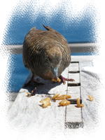 ペットみたい♪ |
|
お昼ごはんが終わると、私は身支度開始。 ２時にお迎えがくることになっているので、早めに準備しなくっちゃ。 ひでくんは、支度も私ほど時間がかからないので、もうひと泳ぎ。 また船着場の方まで泳いでいいきました。 （ぷかぷか浮いているところをこっそり撮影） |
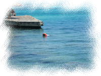 ひでくん遊泳中 |
|
今回お願いしたフォトツアーは、 日本人のMegumiさんとフランス人カメラマンのJeanLucさんが主催している写真撮影サービスです。 ウェディング衣装やタヒチアン衣装などで撮影してもらえます。 「ごくぼら」や「タヒチナビ」のページに紹介されているのを見て、メールで予約しました。 事前に衣装や料金についてなど、問い合わせして決められるので安心です。 |
|
ハネムーンじゃないのにこういうサービスを頼む人はいないかな、とも思ったのだけど、 結婚前に海外ウェディングに憧れていたこともあり、 記念にきれいな写真を残した～い、ということで、思い切ってお願いしちゃいました。 衣装は、「白パレオ（タヒチアンウェディング衣装）」「カラーパレオ」「タヒチアン衣装」の ３パターンをレンタルすることに決めました。 |
| 約束の２時に、MegumiさんとJeanLucさんが、私たちの部屋にいらっしゃいました。 まずは、撮影の衣装決めです。 カラーパレオは、いくつかあるレンタルパレオの中から選ぶ予定だったのですが、 Megumiさんから、「ホテルからのプレゼントのパレオをおそろいで着るのも素敵ですよ」と 勧めていただき、そうすることにしました。 |
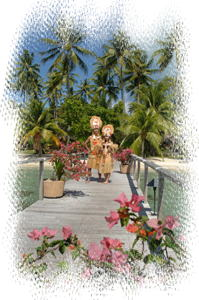 タヒチアン衣装 （ホテルボラボラ敷地内にて） |
衣装が決まると、部屋で衣装に着替えます。 最初の衣装は、「タヒチアン衣装」です。 頭に大きな冠をかぶり、腰には腰ミノを巻き、 そして胸にはココブラ。 胸に当てるのは普通の衣装のもあったのだけど、ノリでココブラ付けちゃいました。 （ココブラ、やっぱ露出度高いです。ナイスバディならノープロブレム d(゜-^*) なのですが、 幼児体系のワタクシは・・。後で見ると恥ずかしいデス。。） 着替えが終わると、ホテルの敷地内・水上バンガロー前のビーチで撮影開始です。 ホテルボラボラのシンボル？になっているセイリングカヌーに腰掛けたり、 やしの木の前でポーズをとったり。 ふたりともガチガチに緊張してて、笑顔がこわばってましたが。。 MegumiさんとJeanLucさんとお話しながら撮影するうちに、徐々に緊張がほぐれてきました。 |
|
次の衣装は、ホテボラのカラーパレオです。 ホテルの敷地内で何枚か撮影した後、車でマティラビーチに移動しました。 （ホテルの外に出るのはこれが初めてです） マティラビーチは、ホテボラから明日泊まるインターコンチへ向かう途中にある長いビーチです。 コバルトブルーの海がとってもきれいで素敵なビーチ。 ここの写真を多めにしてもらえばよかったかな～。 その後、トップダイブ（フレンチレストラン）に移動し、の敷地内のデッキで撮影。 ここはオテマヌ山がきれいに見えます。 |
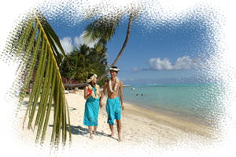 ホテボラパレオ（マティラビーチにて） |
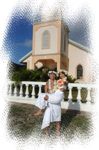 白パレオでお姫様ダッコ♪ （ファアヌイの教会にて） |
部屋に戻り、最後の衣装「白パレオ」に着替えます。 私たちには、この「白パレオ」が一番ハマってた気がします。 この衣装でもホテルの敷地内で何枚か撮影して、 ファアヌイの教会に移動です。 ここで式を挙げたみたいに、フラワーシャワーを受けたり、お姫様だっこでポーズをとったり。 念願の海外ウェディング写真。照れたけど、うれしかった♪ 最後に、ヴァイタペの市役所や地図看板の前で撮影し、 約２時間ほどのフォトツアー終了です。 写真はCD-ROMに焼いて、明日届けていただくことになりました。 どんなふうに写っているのか、楽しみです。(o(^-^)o) わくわく♪ |
|
部屋に戻り、着替えてちょっとまったりタイム。 ふと隣を見ると、、ひでくんがすっかりねむねむモードです。 えっ、まだ夕方５時過ぎなのに・・？朝早起きしたからでしょうか。 ６時から、ホテル主催のカクテルパーティーに行くんだよ～、 もうすぐ夕陽が見えるよ～、 と、必死に起こしてみるものの・・制御不能のようです。。 さっきウェディング写真撮ったりして、いいムードのままふたりで余韻に浸りたかったのにぃ。。 う～ん、これは少し寝かせるしかないか。 仕方がないので、ひとりで夕陽撮影してました。しょぼん。 |
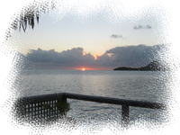 |
もうすぐ６時。カクテルパーティが始まっちゃう～。 かわいそうだけど、ひでくんを無理やり起こしにかかります。 起きないと、ひとりでパーティいっちゃうぞ～～。起きてようー。 ・・なんとか起きてくれました。でもまだ頭半分寝てるみたいだけど。。 |
|
少し遅れてメインビーチの方へ行くと、もうパーティは始まっていました。 タヒチアンミュージックの生演奏があり、 立食形式で、テーブルの周りにゲストの方が集まっています。 日本人スタッフのマミさんはいないようです。 ゲストの方は、日本人割合が少し多目だけど、外国の方もたくさんいます。 とりあえず、私たちもシャンパンをもらって二人で乾杯♪ ( ^-^)／▼☆▼＼(^-^ ) そして恐る恐る、テーブルに近づいてみると・・。突然、日本人のご夫婦から、 「あら、ご結婚おめでとうございます～！」と声をかけられました。 私たちがウェディング衣装で撮影をしていたのを、お部屋から見ていたそうです。 恥ずかしい～(/*^^*)/ 「今日挙式したのではなくて、そういう写真撮影サービスをお願いしたんですよ～」 とあわてて説明。 （実は結婚して２年も経ってる、とは言えませんでした・・） |
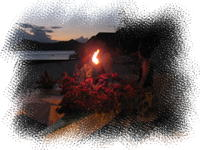 カクテルパーティ |
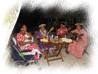 タヒチアンミュージックの演奏 |
テーブルに出ている軽食（おつまみ）をつまみつつ、ちょっとお話していると、 向こうのテーブルにマミさん発見したので、ちょっとご挨拶。 ちょうどそのときマミさんとお話していた日本人ご夫婦を紹介してもらいました。 |
|
札幌からいらしたそのご夫婦（お名前忘れちゃいました・・）は、 ご主人が私たちと同い年で、結婚してから２～３年経過している、という共通点があり、 意気投合していろいろおしゃべりしました。 今日到着されたそうで、先に１泊している私たちは、ちょっと先輩っぽく おすすめ情報なんかお話したりして。 |
| また、びっくりしたことに、あちらもＪリーグファン。コンサドーレ札幌のサポータさんでした。 うち（ベガルタ仙台）のライバルではないですか～＼(◎o◎)／！ 折りしもベガルタはこの前、札幌に手痛い負けを記したばかり。。 今度は札幌ドームか仙台スタジアムでお会いしましょう～、なんて最後にご挨拶をし、 そのご夫婦と別れました。 （既にパーティはほぼ終わってました・・） タヒチでこんな話ができるなんて・・。記念に一緒に写真撮ってもらえばよかったな～。 |
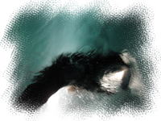 きょうのまんた |
今晩もホテルのレストランに行く予定だったのですが、 カクテルパーティでそれなりにおなかが落ち着いてしまったので、 部屋に戻ってフルーツを食べることにしました。 部屋に戻る前に、今日のマンタチェックをしに船着場へ。 今日もきてるといいな～、と思いながら近づくと・・・。 |
| なんとなんと、マンタが ”２匹” いるではないですか！！ 見られない日もある、と聞いていたのに、 いっぺんに２匹も見られるなんて。。 ＼(▽＾＼)(／＾▽)／ ラッキー♪ きっと私たちの日ごろの行いがよかったに違いない（？） 今日もまた、マンタの優雅に泳ぐ姿に見惚れてしまうのでした。 |
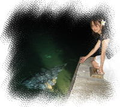 まんたと記念撮影 |
| 部屋に戻ると、ベッドにお手紙と精算書がありました。 明日のチェックアウトは１１時で、ホテル移動の車が迎えにきます、とのこと。 そして精算書。 「間違えてることも多いのでしっかり確認すべし」という情報が どこかのサイトにあったけど、ウチも多聞にもれず。。 なんか謎のアクティビティ料金が付いてるぞ・・？ レセプションで問い合わせて、精算書を修正してもらいました。ホッ。 |
| ・・ホッ、としたのもつかの間。 「あ、部屋のカギ持ってくるの忘れた・・」と、ひでくん。ええっ？！。 再びレセプションのスタッフへ、「Excuse me...」 部屋のカギをもうひとつ借りました。ふぅ。。 |
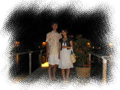 夜の旧プレミアムバンガロー |
部屋に戻り、フルーツを用意して、 今日もまた、テラスで星を眺めます。 今晩はホテボラ最後の夜。明日の午前中にはホテル移動です。 名残惜しいなあ。。 |
<< Previous Day ( 1stDay ) << ｜ top (2ndDay) ｜ >> Next Day ( 3rdDay ) >> |